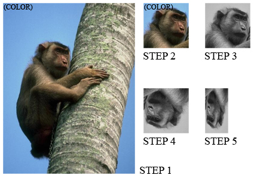

Examples
Pixel-level Operations
Here are some operations you can do with pixel values, pixel pointers and pixel references:
rgb8_pixel_t p1(255,0,0); // make a red RGB pixel
bgr8_pixel_t p2 = p1; // RGB and BGR are compatible and the channels will be properly mapped.
assert(p1==p2); // p2 will also be red.
assert(p2[0]!=p1[0]); // operator[] gives physical channel order (as laid down in memory)
assert(semantic_at_c<0>(p1)==semantic_at_c<0>(p2)); // this is how to compare the two red channels
get_color(p1,green_t()) = get_color(p2,blue_t()); // channels can also be accessed by name
const unsigned char* r;
const unsigned char* g;
const unsigned char* b;
rgb8c_planar_ptr_t ptr(r,g,b); // constructing const planar pointer from const pointers to each plane
rgb8c_planar_ref_t ref=*ptr; // just like built-in reference, dereferencing a planar pointer returns a planar reference
p2=ref; p2=p1; p2=ptr[7]; p2=rgb8_pixel_t(1,2,3); // planar/interleaved references and values to RGB/BGR can be freely mixed
//rgb8_planar_ref_t ref2; // compile error: References have no default constructors
//ref2=*ptr; // compile error: Cannot construct non-const reference by dereferencing const pointer
//ptr[3]=p1; // compile error: Cannot set the fourth pixel through a const pointer
//p1 = pixel<float, rgb_layout_t>();// compile error: Incompatible channel depth
//p1 = pixel<bits8, rgb_layout_t>();// compile error: Incompatible color space (even though it has the same number of channels)
//p1 = pixel<bits8,rgba_layout_t>();// compile error: Incompatible color space (even though it contains red, green and blue channels)Here is how to use pixels in generic code:
template <typename GrayPixel, typename RGBPixel>
void gray_to_rgb(const GrayPixel& src, RGBPixel& dst)
{
gil_function_requires<PixelConcept<GrayPixel> >();
gil_function_requires<MutableHomogeneousPixelConcept<RGBPixel> >();
typedef typename color_space_type<GrayPixel>::type gray_cs_t;
static_assert(boost::is_same<gray_cs_t,gray_t>::value, "");
typedef typename color_space_type<RGBPixel>::type rgb_cs_t;
static_assert(boost::is_same<rgb_cs_t,rgb_t>::value, "");
typedef typename channel_type<GrayPixel>::type gray_channel_t;
typedef typename channel_type<RGBPixel>::type rgb_channel_t;
gray_channel_t gray = get_color(src,gray_color_t());
static_fill(dst, channel_convert<rgb_channel_t>(gray));
}
// example use patterns:
// converting gray l-value to RGB and storing at (5,5) in a 16-bit BGR interleaved image:
bgr16_view_t b16(...);
gray_to_rgb(gray8_pixel_t(33), b16(5,5));
// storing the first pixel of an 8-bit grayscale image as the 5-th pixel of 32-bit planar RGB image:
rgb32f_planar_view_t rpv32;
gray8_view_t gv8(...);
gray_to_rgb(*gv8.begin(), rpv32[5]);As the example shows, both the source and the destination can be references or
values, planar or interleaved, as long as they model PixelConcept and
MutablePixelConcept respectively.
Resizing image canvas
Resizing an image canvas means adding a buffer of pixels around existing pixels. Size of canvas of an image can never be smaller than the image itself.
Suppose we want to convolve an image with multiple kernels, the largest of which is 2K+1 x 2K+1 pixels. It may be worth creating a margin of K pixels around the image borders. Here is how to do it:
template <typename SrcView, // Models ImageViewConcept (the source view)
typename DstImage> // Models ImageConcept (the returned image)
void create_with_margin(const SrcView& src, int k, DstImage& result)
{
gil_function_requires<ImageViewConcept<SrcView> >();
gil_function_requires<ImageConcept<DstImage> >();
gil_function_requires<ViewsCompatibleConcept<SrcView, typename DstImage::view_t> >();
result=DstImage(src.width()+2*k, src.height()+2*k);
typename DstImage::view_t centerImg=subimage_view(view(result), k,k,src.width(),src.height());
std::copy(src.begin(), src.end(), centerImg.begin());
}We allocated a larger image, then we used subimage_view to create a
shallow image of its center area of top left corner at (k,k) and of identical
size as src, and finally we copied src into that center image. If the
margin needs initialization, we could have done it with fill_pixels. Here
is how to simplify this code using the copy_pixels algorithm:
template <typename SrcView, typename DstImage>
void create_with_margin(const SrcView& src, int k, DstImage& result)
{
result.recreate(src.width()+2*k, src.height()+2*k);
copy_pixels(src, subimage_view(view(result), k,k,src.width(),src.height()));
}(Note also that image::recreate is more efficient than operator=, as
the latter will do an unnecessary copy construction.) Not only does the above
example work for planar and interleaved images of any color space and pixel
depth; it is also optimized. GIL overrides std::copy - when called on two
identical interleaved images with no padding at the end of rows, it simply
does a memmove. For planar images it does memmove for each channel.
If one of the images has padding, (as in our case) it will try to do
memmove for each row. When an image has no padding, it will use its
lightweight horizontal iterator (as opposed to the more complex 1D image
iterator that has to check for the end of rows). It chooses the fastest method,
taking into account both static and run-time parameters.
Histogram
The histogram can be computed by counting the number of pixel values that fall in each bin. The following method takes a grayscale (one-dimensional) image view, since only grayscale pixels are convertible to integers:
template <typename GrayView, typename R>
void grayimage_histogram(const GrayView& img, R& hist)
{
for (typename GrayView::iterator it=img.begin(); it!=img.end(); ++it)
++hist[*it];
}Using boost::lambda and GIL’s for_each_pixel algorithm, we can write
this more compactly:
template <typename GrayView, typename R>
void grayimage_histogram(const GrayView& v, R& hist)
{
for_each_pixel(v, ++var(hist)[_1]);
}Where for_each_pixel invokes std::for_each and var and _1 are
boost::lambda constructs. To compute the luminosity histogram, we call the
above method using the grayscale view of an image:
template <typename View, typename R>
void luminosity_histogram(const View& v, R& hist)
{
grayimage_histogram(color_converted_view<gray8_pixel_t>(v),hist);
}This is how to invoke it:
unsigned char hist[256];
std::fill(hist,hist+256,0);
luminosity_histogram(my_view,hist);If we want to view the histogram of the second channel of the image in the top left 100x100 area, we call:
grayimage_histogram(nth_channel_view(subimage_view(img,0,0,100,100),1),hist);No pixels are copied and no extra memory is allocated - the code operates directly on the source pixels, which could be in any supported color space and channel depth. They could be either planar or interleaved.
Using image views
The following code illustrates the power of using image views:
jpeg_read_image("monkey.jpg", img);
step1=view(img);
step2=subimage_view(step1, 200,300, 150,150);
step3=color_converted_view<rgb8_view_t,gray8_pixel_t>(step2);
step4=rotated180_view(step3);
step5=subsampled_view(step4, 2,1);
jpeg_write_view("monkey_transform.jpg", step5);The intermediate images are shown here:

Notice that no pixels are ever copied. All the work is done inside
jpeg_write_view. If we call our luminosity_histogram with
step5 it will do the right thing.